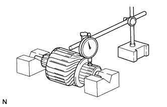
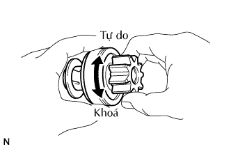

MÁY KHỞI ĐỘNG > KIỂM TRA |
| 1. KIỂM TRA MÁY KHỞI ĐỘNG |
Tiến hành thử chức năng cuộn kéo/cuộn giữ.
Ngắt dây dẫn ra khỏi cực C.
Nối ắc quy vào công tắc từ như chỉ ra trong hình vẽ. Sau đó, kiểm tra rằng bánh răng chủ động li hợp hồi về bên trong.
Với ắc quy được nối như ở trên và với bánh răng dẫn động li hợp ở phía ngoài, hãy ngắt dây âm ra khỏi cực C. Kiểm tra rằng bánh răng dẫn động vẫn ở bên ngoài.
Ngắt dây (-) ra khỏi thân máy khởi động. Kiểm tra rằng bánh răng chủ động hồi về bên trong. Nếu kết quả không như tiêu chuẩn, thay bộ máy khởi động.
Tiến hành thử hoạt động không tải.
Nối dây dẫn của stato với cực C.
Kẹp máy khởi đông lên êtô.
Nối ắc quy và Aêmpe kế với máy khởi động như được chỉ ra trong hình vẽ.
Kiểm tra rằng máy khởi động quay êm và ổn định khi bánh răng chủ động chuyển động lao ra. Sau đó đo dòng điện.
| 2. KIỂM TRA CỤM RÔTO MÁY KHỞI ĐỘNG |
Kiểm tra hở mạch của cổ góp.
Đo điện trở giữa hai đoạn dây bất kỳ của cổ góp.
Kiểm tra ngắn mạch của cổ góp.
Đo điện trở giữa một đoạn của cổ góp và lõi của rôto.
Kiểm tra bề mặt cổ góp không bị bẩn hoặc cháy.
Nếu bề mặt bị bẩn hoặc cháy, hãy mài bề mặt bằng giấy ráp #400 hoặc máy tiện.
|  |
Kiểm tra độ đảo của cổ góp.
Đặt cổ góp lên các khối V.
Dùng đồng hồ so, đo độ đảo cổ góp.
Dùng thước cặp, đo đường kính cổ góp.
Dùng một thước cặp, đo chiều sâu rãnh cắt của cổ góp.
| 3. KIỂM TRA CỤM CÀNG MÁY KHỞI ĐỘNG |
Kiểm tra hở mạch.
Đo điện trở giữa dây dẫn và đầu chổi than phía Stato.
Kiểm tra ngắn mạch.
Đo điện trở giữa đầu cuộn dây stato và Stato.
| 4. KIỂM TRA CHIỀU DÀI CHỔI THAN |
Dùng thước cặp, đo chiều dài của chổi than.
| 5. KIỂM TRA CỤM GIÁ ĐỠ CHỔI THAN |
Kiểm tra cách điện của chổi than.
Đo điện trở giữa cực (+) và cực (-) của các giá đỡ chổi than.
Dùng cân kéo đọc giá trị ngay khi lò xo chổi than tách ra khỏi chổi than.
| 6. KIỂM TRA RĂNG CỦA BÁNH RĂNG |
Kiểm tra răng trên các bánh răng hành tinh, bánh răng trong và li hợp máy khởi động không bị mòn hoặc hỏng.
Nếu bánh răng bị hỏng, hãy thay thế nó.
Nếu răng của li hợp máy khởi động bị hỏng, hãy thay li hợp máy khởi động và kiểm tra vành răng của bánh đà xem có bị mòn hay hư hỏng không.
| 7. KIỂM TRA CỤM LI HỢP TỪ MÁY KHỞI ĐỘNG |
|  |
Quay bánh răng chủ động cùng chiều kim đồng hồ và kiểm tra rằng nó quay tự do. Thử quay nó theo chiều ngược lại và kiểm tra rằng nó bị khoá.
Nếu cần, hãy thay thế li hợp máy khởi động.
| 8. KIỂM TRA CẦN ĐẨY |
Hãy ấn píttông và kiểm tra rằng nó hồi về nhanh chóng đến vị trí ban đầu.
Nếu cần, hãy thay thế cụm công tắc từ.
| 9. KIỂM TRA CỤM CÔNG TẮC TỪ MÁY KHỞI ĐỘNG |
Kiểm tra cuộn kéo.
Đo điện trở giữa các cực 50 và 2.
Kiểm tra cuộn giữ.
Đo điện trở giữa các cực 50 và thân công tắc.